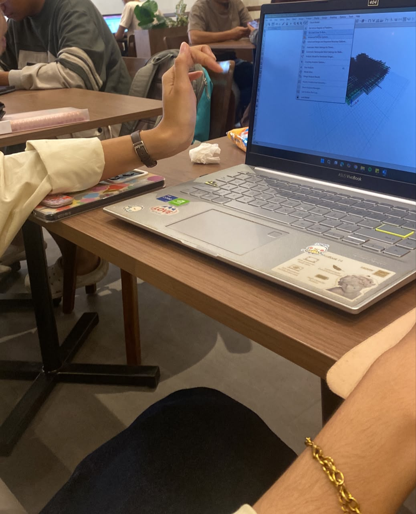

Nikmati waktu Anda di samudra raya.
Taksonomi Latin
Deskripsi mendalam mengenai biota laut ini.
Fakta menarik tentang spesies ini.
(Buka pelan-pelan ya!)
Lewat catatan kecil ini, aku cuma mau bilang makasih banyak ya karena kamu udah bantuin aku.
Bantuanmu bener-bener berarti banget buat aku.
Karena kamu udah baik banget, boleh nggak sekarang gantian aku yang bantuin kamu?
Bantuin skripsi kamu kek, atau bantuin apa aja deh yang lagi kamu kerjain.

Jujur dari kemarin aku pengen banget ngajakin kamu keluar.
Boleh nggak aku traktir kamu sebagai tanda terima kasih? Boleh ga sih? hehe 👉👈
(Semoga jawabannya boleh ya!)